Who is Brandy?
Brandy's radiant laugh, deep compassion, and passion for life continue to inspire everyone who knew her. Her spirit lives on in the people she touched — and in the way we choose to live, love, and remember.
Brandy was born on November 30th, 1992 in Northeast Ohio — about halfway between Pittsburgh, Pennsylvania and Cleveland, Ohio.
She was close with her family growing up, spending much of her time with her sister, her grandparents, and her cousins. By the time she reached middle school, she had developed a love for cats, music, riding go-carts, and creative writing.
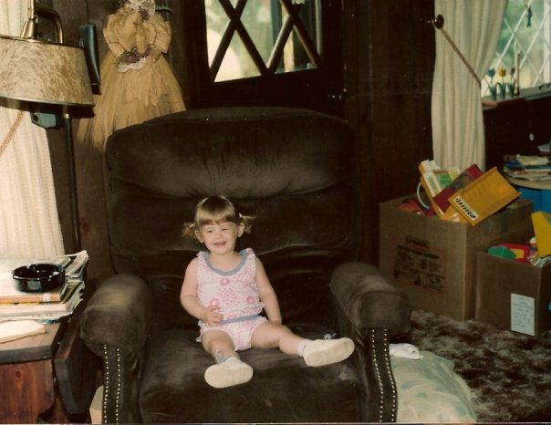
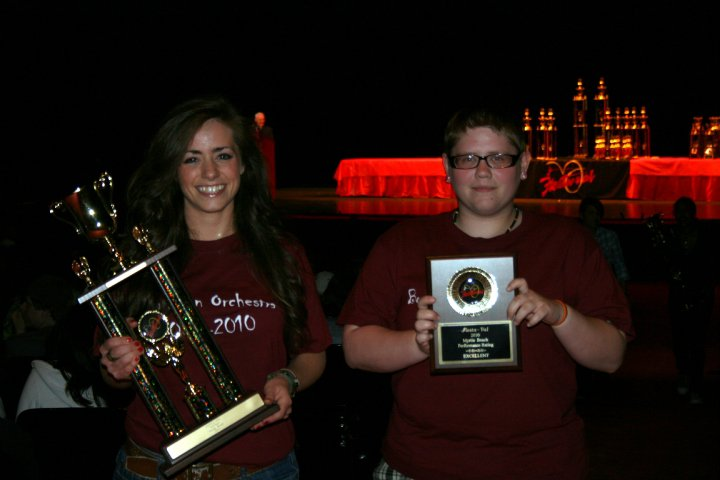
Brandy was an orchestra member for eight years, playing the upright bass. She played the electric bass at home and loved jam sessions with her close friends. She was part of the Teen Advisory Board for the Boardman library, where they still keep a section of books dedicated to her.
She liked taking walks after school with her friends, or staring at the stars in the driveway. Warped Tours. Punk music. But she could just as easily be found blasting country or rap and singing loud in the car with her sister.
Brandy was silly and fun to be around.
Brandy genuinely cared about people. She was a great listener who uplifted those who came to her for help or advice, and she gravitated toward people who were going through tough times. She had a way of giving counsel that was wise beyond her years.
She was well-read and fascinated by human behavior — why do people do the things they do? She wanted a career that would let her explore that question and turn her natural gifts into a tool to help others. At the time of her death, she was a college student studying psychology and sociology at Youngstown State University.
A Life in Photos
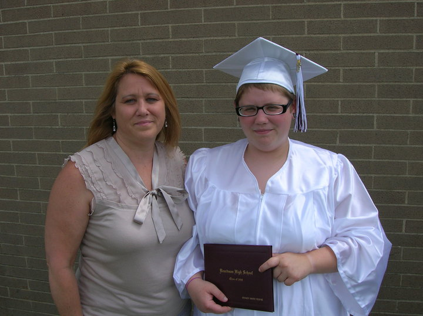
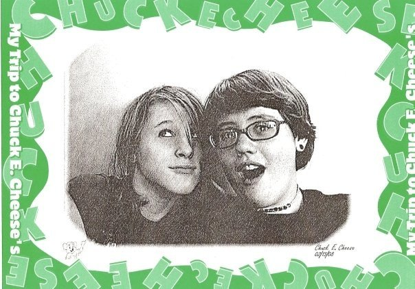
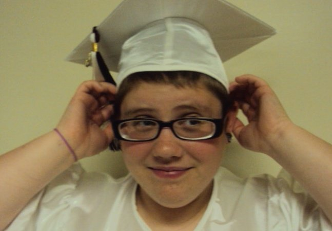
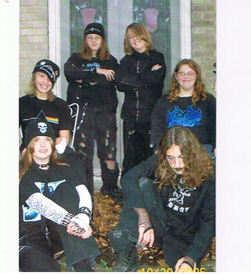
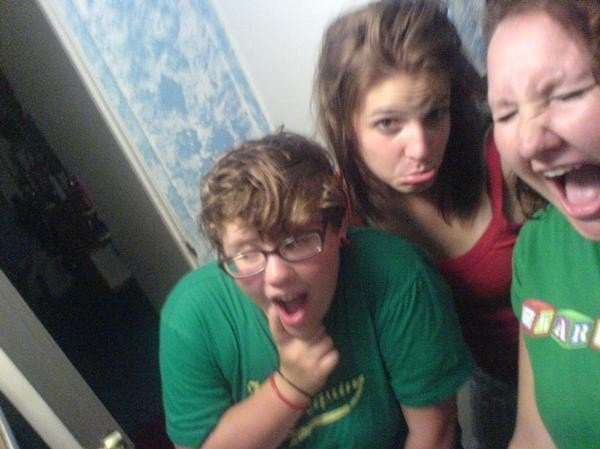
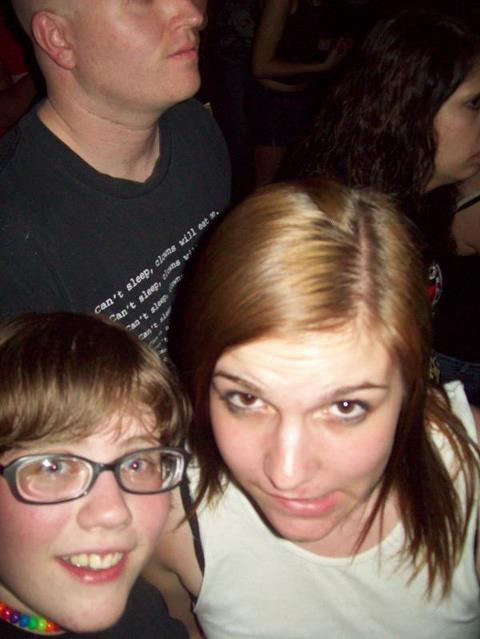
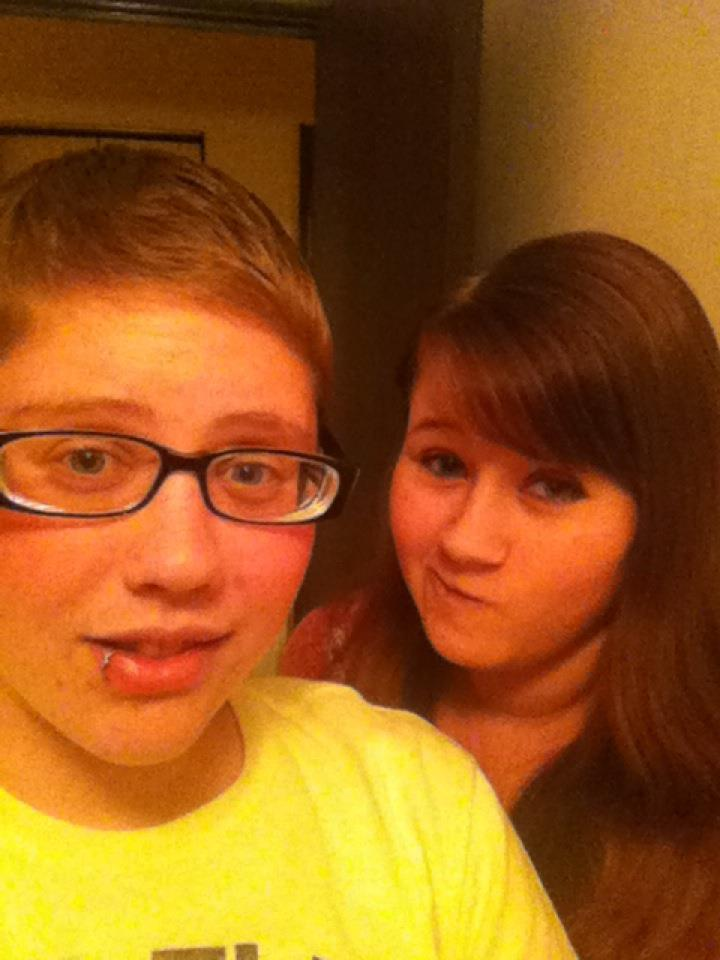
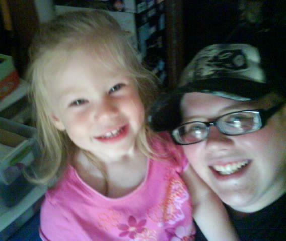
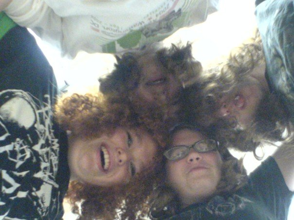
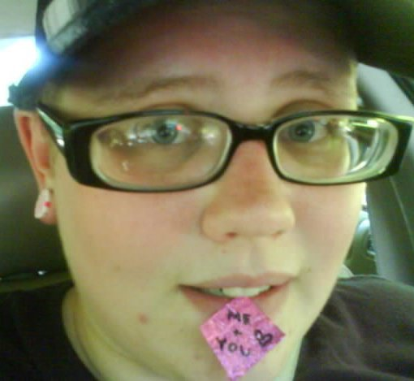
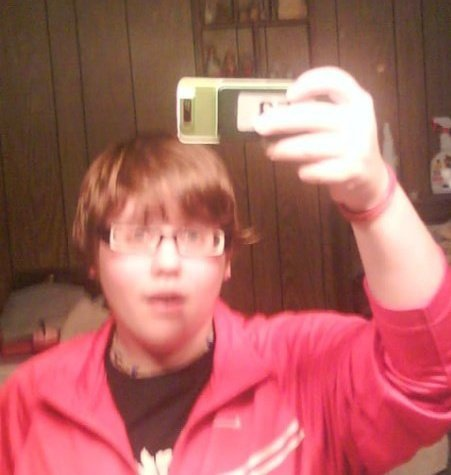
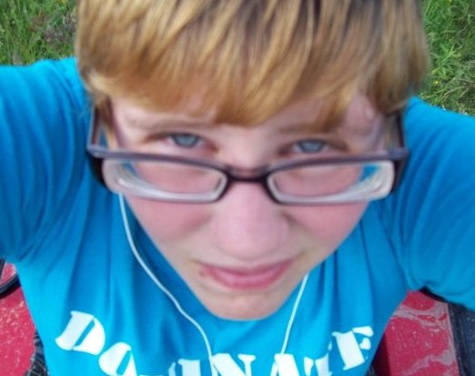